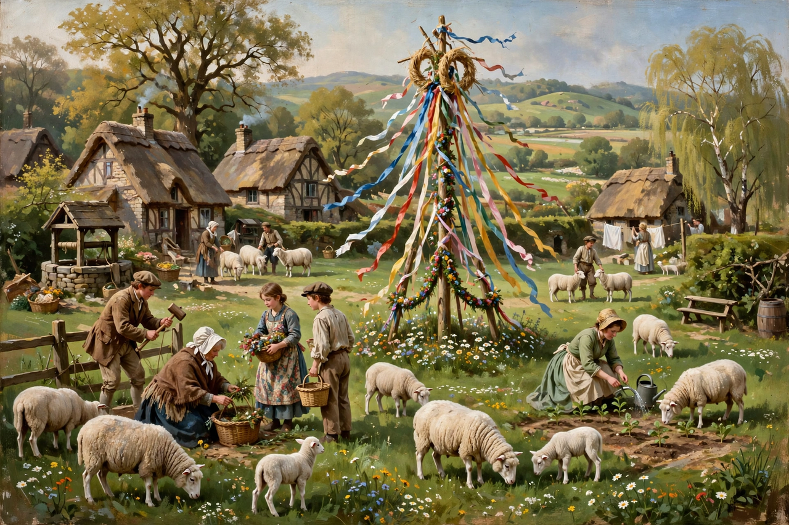

| Common good | |
 | |
| Field | Political philosophy, ethics |
|---|---|
| Key thinkers | Plato, Aristotle, Thomas Aquinas, Jean-Jacques Rousseau |
In philosophy, economics and political science, the common good (also known as the commonwealth, general welfare or public benefit) is the sum of those facilities — material, cultural or institutional — that members of a community provide to all members in order to fulfil a relational obligation they all share: the common, mutually obligating concern for the good of the whole.
The idea descends from Plato and Aristotle, for whom the polis exists not merely so that people can live, but so that they can live well. Thomas Aquinas defined law itself by reference to the common good: an ordinance of reason "for the common good" made by legitimate authority. In Catholic social teaching, the Second Vatican Council's constitution Gaudium et spes defined the common good as "the sum of those conditions of social life which allow social groups and their individual members relatively thorough and ready access to their own fulfilment."
Jean-Jacques Rousseau distinguished the general will, directed at the common interest, from the mere aggregate of private wills. Modern theorists debate whether the common good is simply the sum of individual goods (the aggregative view) or something irreducibly shared — such as peace, justice and a healthy environment — that can only be enjoyed together. Communitarian thinkers such as Michael Sandel and Alasdair MacIntyre have revived the concept against liberal theories that give priority to individual rights.
In economics, a "common good" (or common-pool resource) is a good that is rivalrous but non-excludable — such as fish stocks or common grazing land — raising the problem dramatised by Garrett Hardin's "tragedy of the commons." Elinor Ostrom showed that communities often devise institutions to govern such resources sustainably, work for which she won the Nobel Memorial Prize in Economic Sciences in 2009.